12 V 배터리에서 모터는 바로, MCU와 센서는 5 V와 3.3 V로 낮춰 공급
12 V 주 전원5 V (벅 컨버터)3.3 V (LDO)제어와 피드백 신호
모터 구동 전원과 제어 · 센서 전원을 나누고, 센서 전원은 LDO를 한 번 더 거쳐 잡음이 적은 3.3 V로 받습니다
바퀴 엔코더는 RS-422 수신기로, 조향 · 승강 엔코더는 STDS를 거쳐 LVDS로 연결
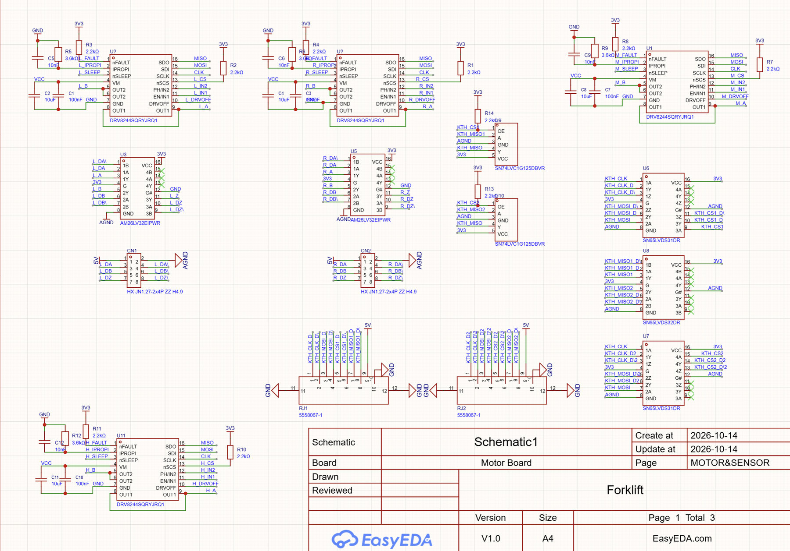
| 신호 경로 |
|---|
| 바퀴 L, R MT6701 → RS-422 |
| 조향, 승강 KTH7801 → STDS → LVDS |
| 전원 5 V → LDO 3.3 V |
바퀴 엔코더는 회전 펄스를, 조향과 승강 엔코더는 SPI로 각도 값을 보내므로 신호 종류에 맞는 차동 방식을 씁니다
DRV8244 네 개가 SPI 선을 함께 쓰고 CS와 방향 입력만 채널마다 따로 받음
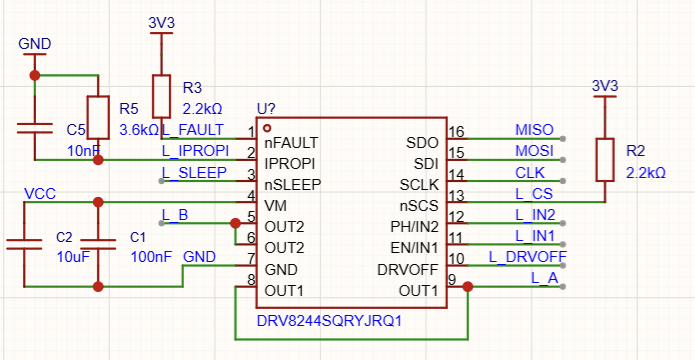
| 채널 | 구동 |
|---|---|
| L, R | 왼쪽, 오른쪽 바퀴 |
| M | 조향 |
| H | 승강 |
| 신호 | 역할 |
|---|---|
| MISO, MOSI, CLK | 네 채널 공유 (설정과 결함 확인) |
| CS | 채널마다 따로 (2.2 kΩ 풀업) |
| IN1, IN2 | 방향과 속도 (PWM) |
| DRVOFF | 출력 즉시 차단 |
| nSLEEP, nFAULT | 대기 전환, 결함 알림 |
| IPROPI | 모터 전류를 전압으로 (ADC) |
설정과 진단은 SPI 한 묶음으로 하고, 출력 차단(DRVOFF)은 비상정지와 연결합니다
바퀴는 MT6701 증분 엔코더, 조향과 승강은 KTH7801 절대 엔코더
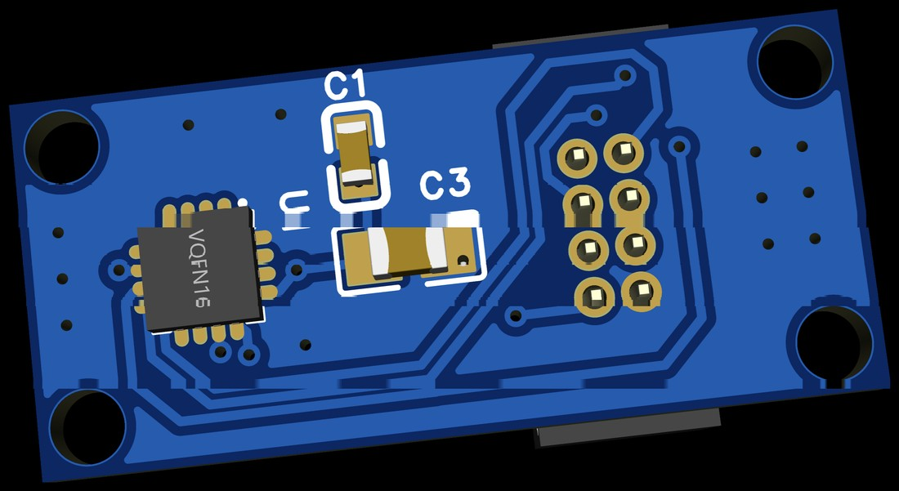
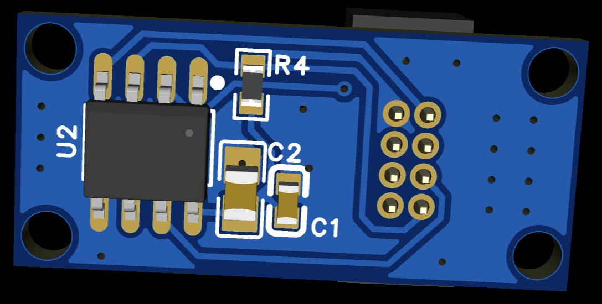
| 항목 | MT6701 | KTH7801 |
|---|---|---|
| 출력 | A, B, Z 펄스 (증분) | SPI 각도 값 (절대) |
| 분해능 | 1,024펄스/회전 | 16비트 |
| 비선형 오차 | ±1.0° (대표값) | ±0.35° (대표값) |
| 전원 켤 때 | 회전 수부터 셈 | 바로 현재 각도 |
| 패키지 | QFN-16 | SOP-8 |
| 품번 | MT6701QT-ACD | KTH7801-X-C-SOP8 |
바퀴는 회전 펄스를 세면 되지만, 조향과 승강은 전원을 켜자마자 현재 각도를 알아야 해서 절대 엔코더를 씁니다
엔코더 보드는 칩과 LDO만 두고 1.27 mm 2×4 커넥터로 신호와 5 V를 주고받음
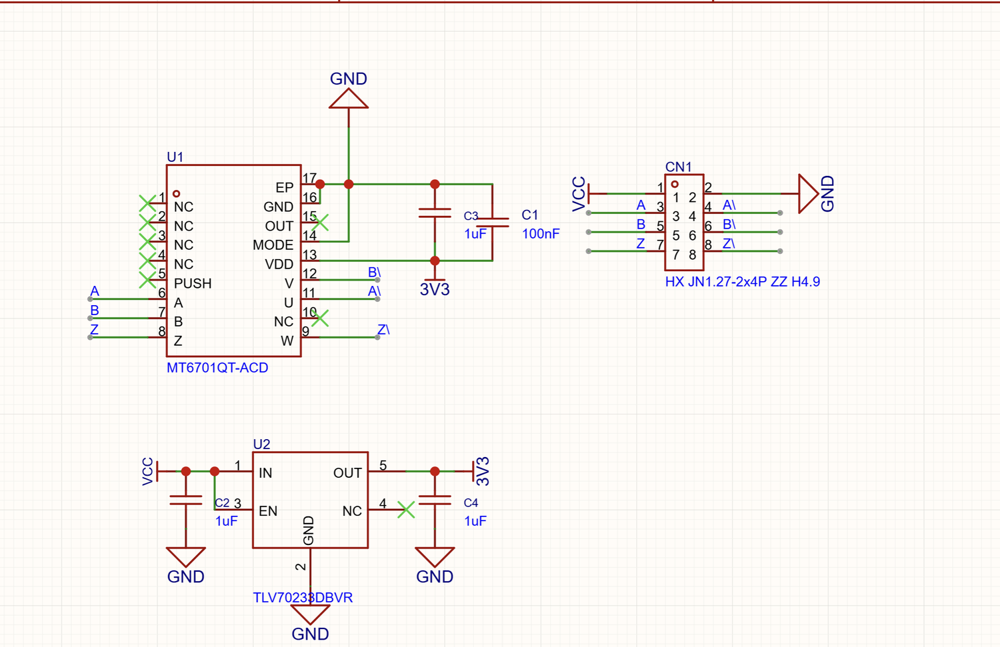
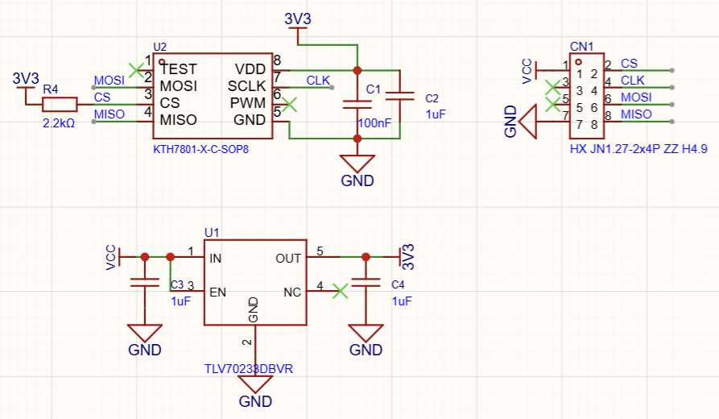
| MT6701 보드 (바퀴) | KTH7801 보드 (조향 · 승강) | |
|---|---|---|
| 보내는 값 | 바퀴가 돈 만큼 나오는 펄스 | 지금 각도 (숫자 값) |
| 신호 선 | 펄스 3쌍 (A, B, Z와 반전) | SPI 4선 (CS, CLK, MOSI, MISO) |
| 전원 | 케이블로 5 V를 받아 보드에서 3.3 V로 낮춤 | |
단일 종단 SPI는 3 m에서 통신 실패, LVDS는 잡음 속에서도 45 dB 이상
단일 종단 SPI 0.5 mLVDS 0.5 m×단일 종단 SPI 3 m (통신 실패)LVDS 3 m
그래서 SPI는 LVDS로, 바퀴 엔코더 펄스는 RS-422 수신기로 받는 차동 방식을 씁니다 (TI 레퍼런스 디자인 시험, 1 Vpp 잡음)
STDS 보드가 KTH7801의 SPI를 LVDS로 바꾸고, 메인보드는 두 센서를 SPI 하나로 받음
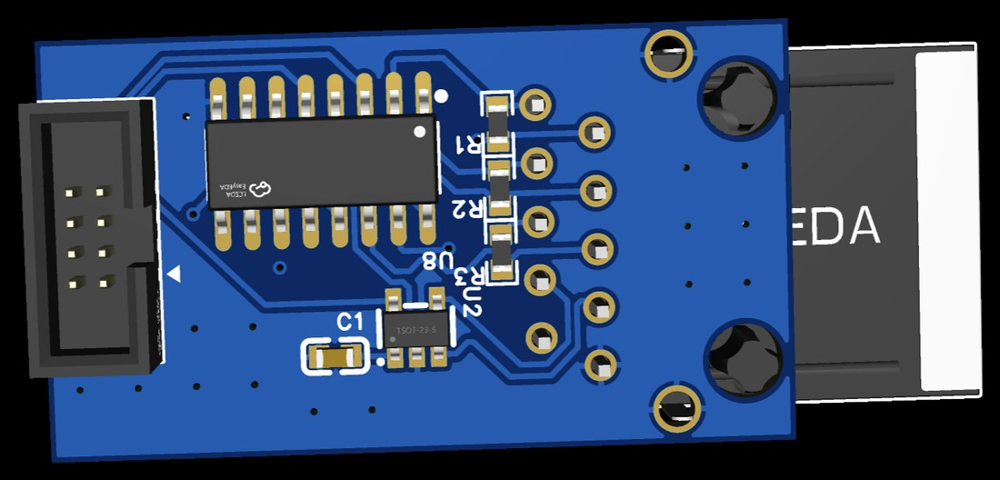
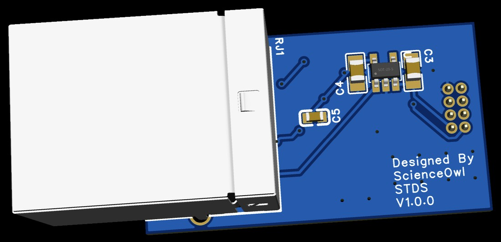
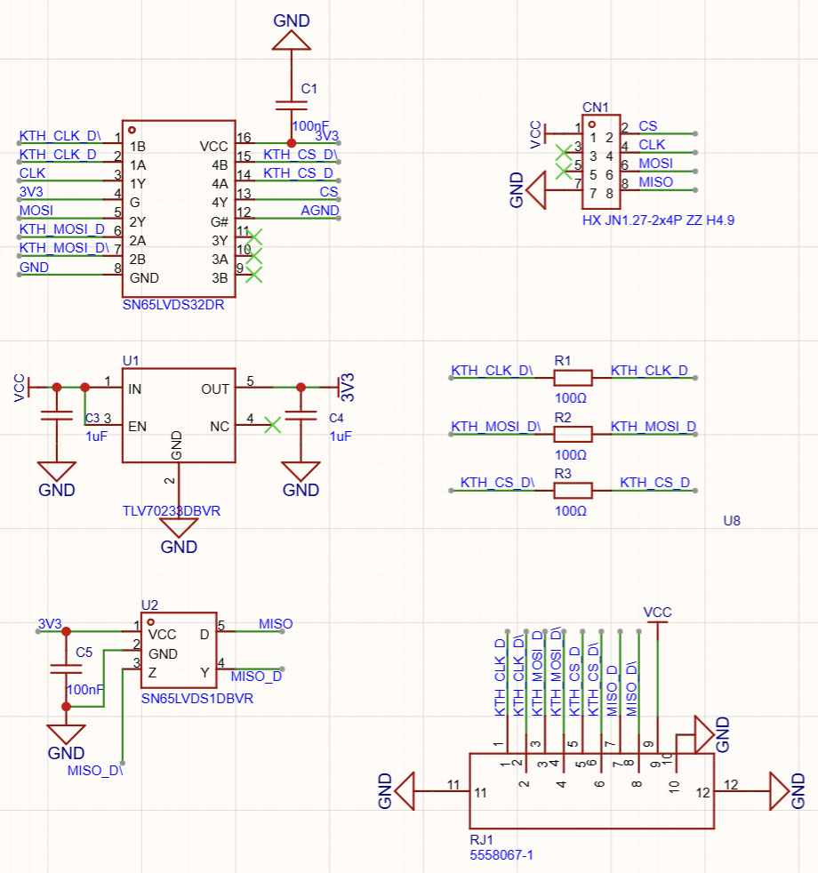
| 구분 | 내용 |
|---|---|
| STDS | Single-ended To Differential Signal |
| STDS 수신 | SN65LVDS32 (CLK, MOSI, CS) |
| STDS 송신 | SN65LVDS1 (MISO) |
| 메인보드 | SN65LVDS31 송신, 32 수신 |
| MISO 공유 | CS가 고른 센서만 통과 |
| 100 Ω 종단 | 0.6 m부터 전송선로라 필요 |
신호 상승 10 ns 기준으로 0.6 m만 넘어도 전송선로라, 수신 쪽 차동 선 끝마다 100 Ω 종단 저항을 답니다
MISO 왕복 지연 때문에 케이블 3 m에서 SCLK는 약 5 MHz까지
| 구간 | 최대 지연 |
|---|---|
| 메인보드 LVDS 송신 (SN65LVDS31) | 2.5 ns |
| STDS LVDS 수신 (SN65LVDS32) | 3 ns |
| 케이블 (가는 길) | 길이 × 5 ns/m |
| KTH7801 MISO 출력 | 50 ns |
| STDS LVDS 송신 (SN65LVDS1) | 3.1 ns |
| 케이블 (오는 길) | 길이 × 5 ns/m |
| 메인보드 LVDS 수신 (SN65LVDS32) | 3 ns |
| MISO 버퍼 (SN74LVC1G125) | 3.7 ns |
| 합계 | 65.3 ns + 길이 × 10 ns/m |
SCLK 반 주기 안에 MISO가 돌아오는 최대 클럭
MISO는 왕복이라 케이블 길이를 정한 뒤 SCLK를 그 아래로 잡습니다 (SPI 연장 전용 칩 LTC4332도 10 m에서 2 MHz)
RJ50 한 가닥에 차동 4쌍과 5 V를 실어 보내고, 센서 보드 LDO에서 3.3 V로 낮춤
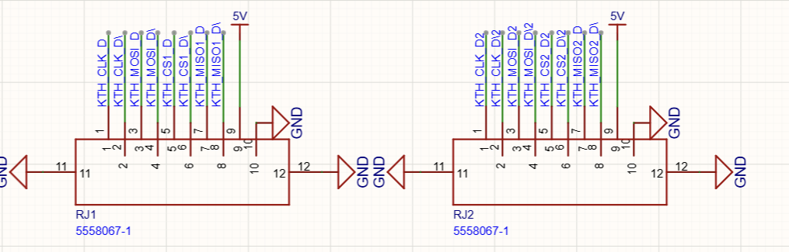
| 핀 | 1, 2 | 3, 4 | 5, 6 | 7, 8 | 9 | 10 |
|---|---|---|---|---|---|---|
| 신호 | CLK | MOSI | CS | MISO | 5 V | GND |
| 전원 | 3.3 V로 직접 | 5 V + LDO |
|---|---|---|
| 센서 칩 최저 전압 | 3.0 V | 3.0 V |
| 케이블 강하 여유 | 0.3 V | 약 1.3 V |
| 커넥터 | 판단 |
|---|---|
| RJ45 (8핀) | 차동 4쌍이면 전원 자리가 없음 |
| 범용 핀 헤더 | 차동용이 아니라 임피던스를 따로 따져야 함 |
| RJ50 (10핀) | 4쌍과 전원, RJ45 계열 모듈러 잭 |
5 V로 보내면 케이블에서 1 V 넘게 떨어져도 센서에는 3.3 V가 일정하게 갑니다 (TLV70233, 300 mA에서 드롭아웃 0.375 V)
KTH7801 보드 커넥터를 2.54 mm와 1.27 mm로 그려 비교 (최종 파일은 1.27 mm)
2.54 mm
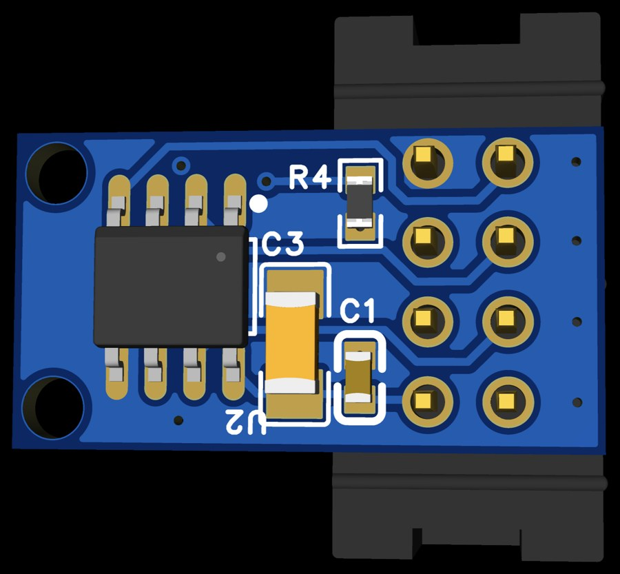
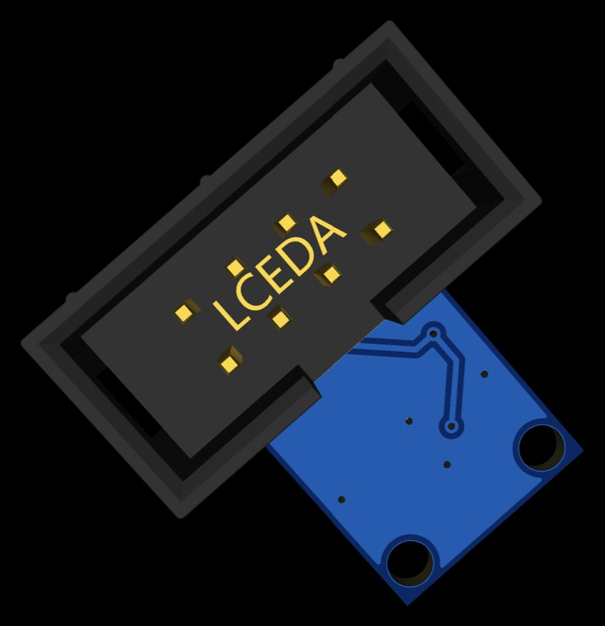
1.27 mm
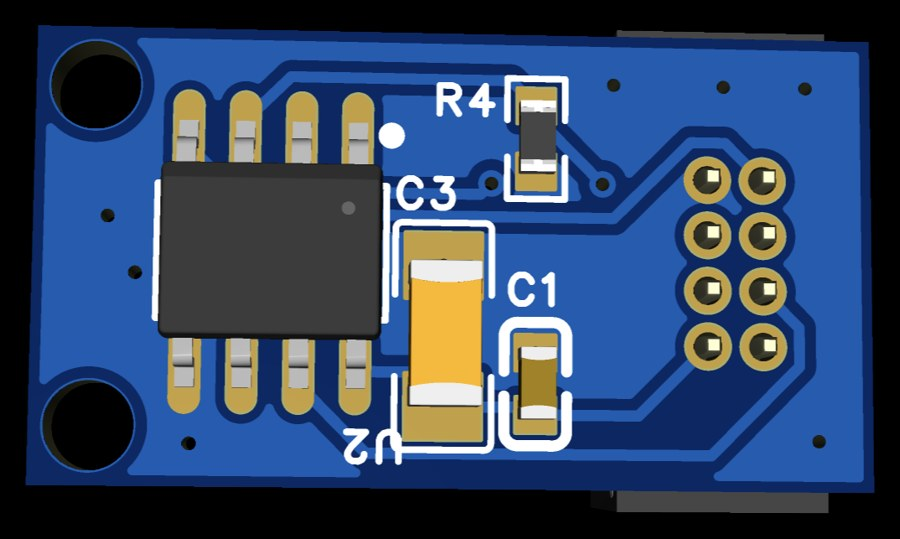
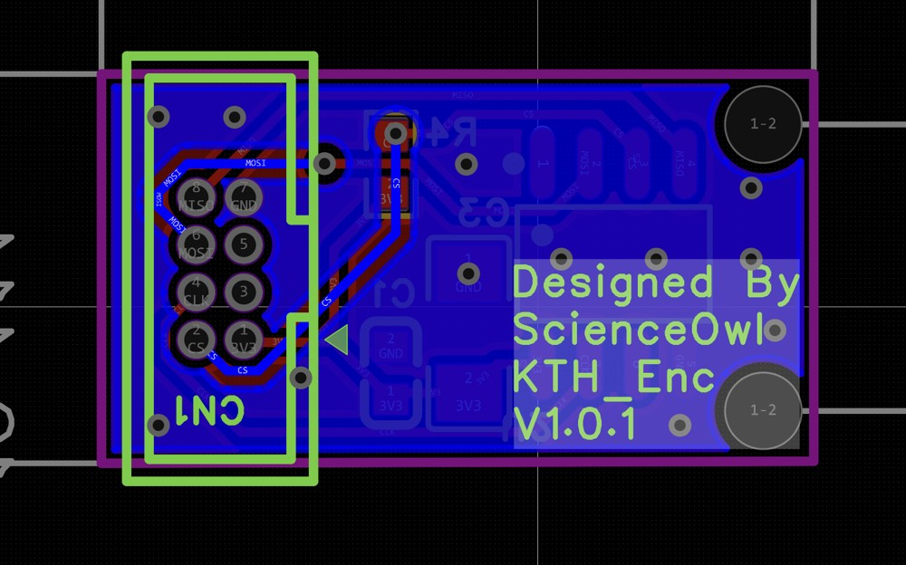
| 핀 간격 | 2.54 mm | 1.27 mm |
|---|---|---|
| 커넥터 크기 | 보드보다 큼 | 가로와 세로 약 절반 |
| 납땜 | 손납땜 쉬움 | 정밀 납땜 필요 |
| 케이블 구하기 | 납작 케이블 흔함 | 선택지 적음 |
보드 4종과 신호 · 전원 방식을 정했고, 다음은 모터 전류 실측과 보드 제작
| 구분 | 결론 | 향후 작업 |
|---|---|---|
| 전원 · 구동 | 12 V 모터 직결, 5 V · 3.3 V 분리, DRV8244 4채널 | 모터 전류 실측 (10/16–22) → 전류 제한 |
| 엔코더 | 바퀴 MT6701 증분, 조향 · 승강 KTH7801 절대 | 보드 제작, 자석 정렬 브래킷 |
| 신호 전송 | ABZ는 RS-422, SPI는 STDS로 LVDS | 케이블 길이 정한 뒤 SCLK 결정 → 실측 |
| 메인보드 | 모터 · 센서 쪽 회로도 | PCB 배치 → 제작 (10/30–11/12) |
| 커넥터 | 1.27 mm 2×4, RJ50 10핀 | 핀 간격 결정 (교수님 의견 반영) |
다음 목표는 보드를 제작해 실차에 모터 드라이버와 엔코더를 다는 것입니다